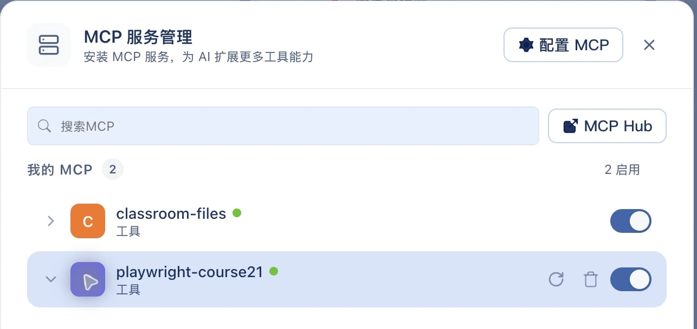
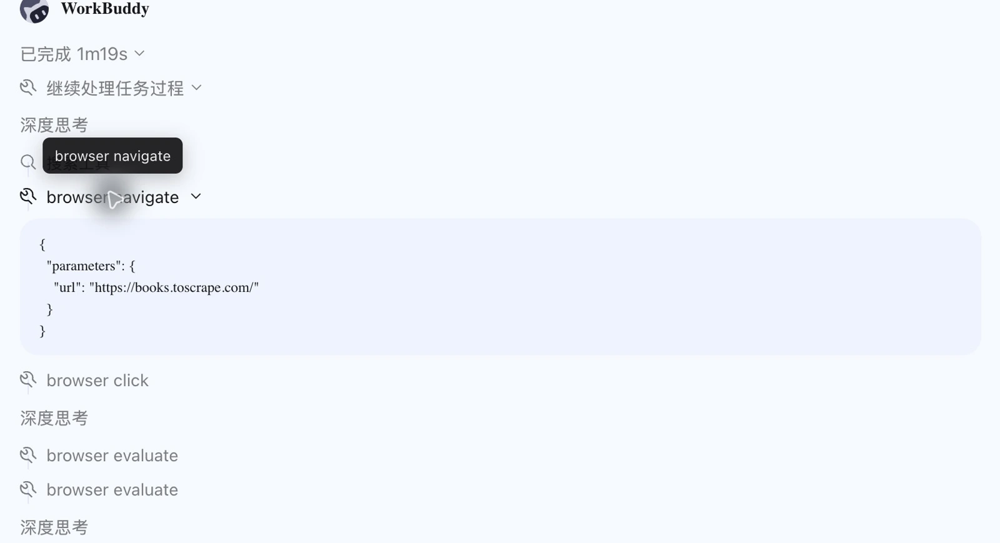
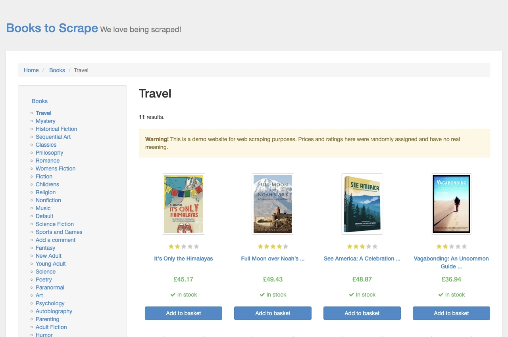
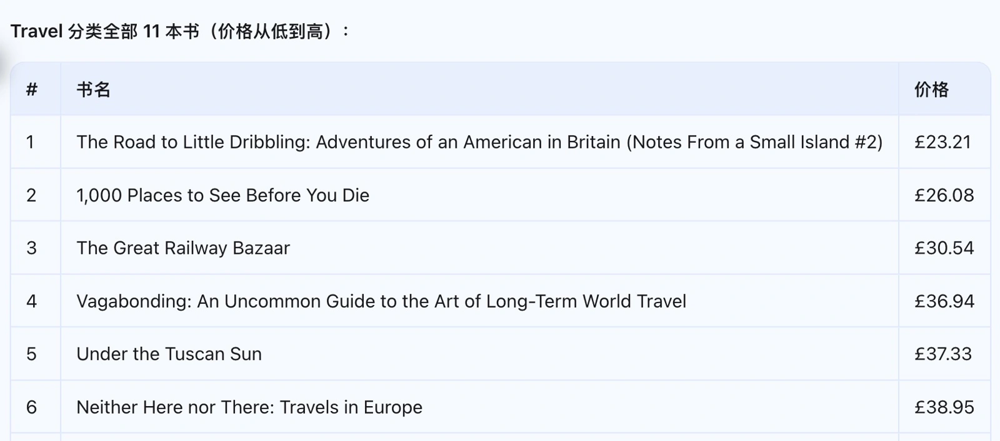
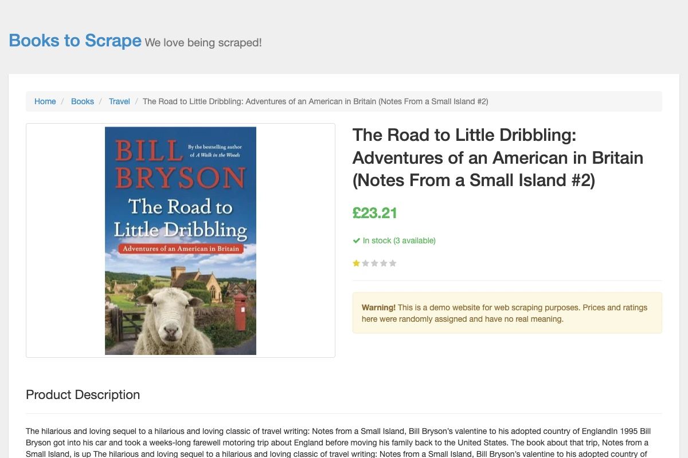
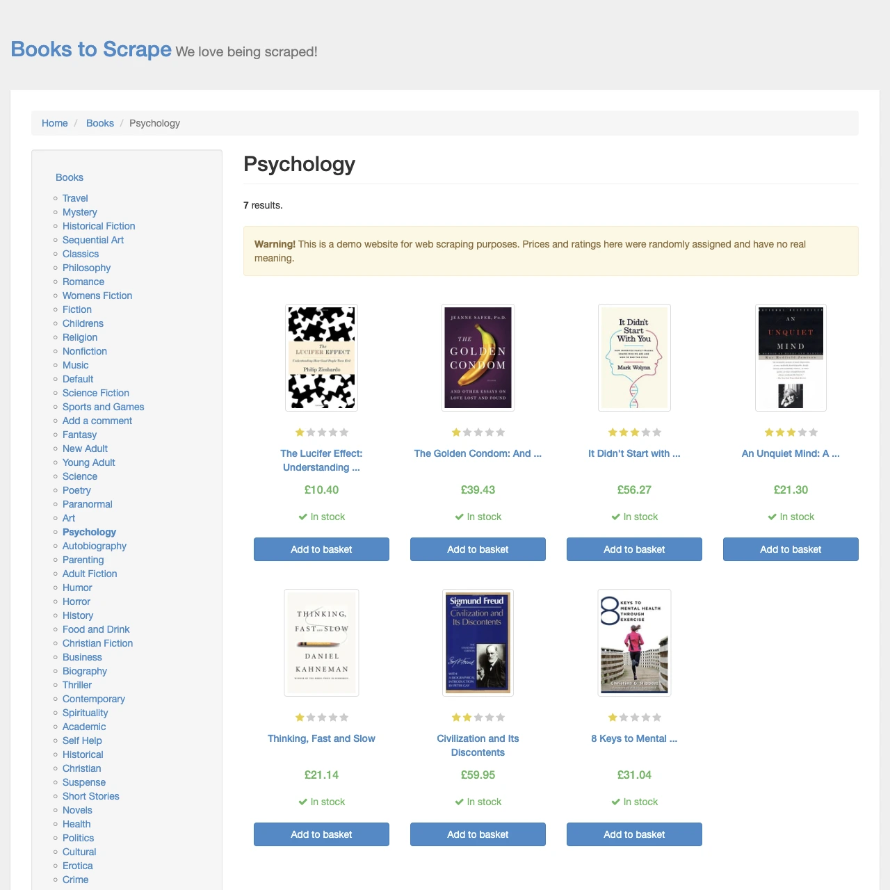
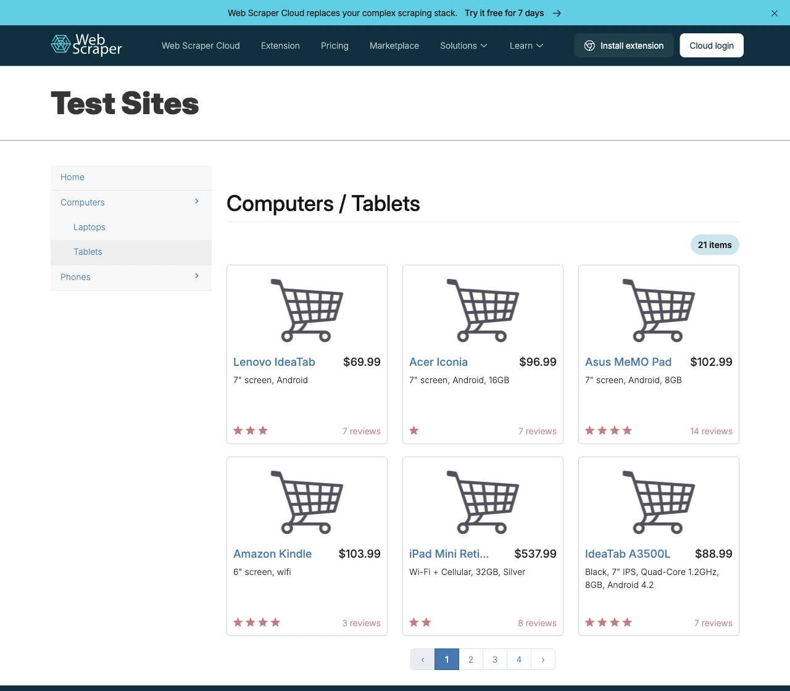

第六章｜AIGC应用与实践 · 第21次课 · 2 学时
浏览器自动化：用Playwright MCP完成网页比价
00 知识回顾
上一课从ima岗位表中引用材料，先确定简历模板，再按不同岗位调整内容。本课把AI的工作范围扩展到浏览器：不再把网页内容复制给它，而是让它打开页面、点击分类并读取结果。
01 任务预告
本课成果： 在WorkBuddy中装好Playwright MCP，使用本机Chrome或Edge完成一次网页比价，得到有完整商品名称、原币种价格和详情链接的比较表，并让AI实际打开选中商品的详情页。
使用条件： 已登录WorkBuddy，电脑已安装Chrome或Edge，以及Node.js长期支持版。Playwright MCP需要Node.js 18及以上；首次启动需要联网下载软件包。两个练习网站都不要求登录商城账号。离线课件可阅读，网页操作任务仍需联网。
本课使用模拟商城： 商品价格只用于练习，不代表真实售价，不需要购买商品。
02 基础概念
1｜浏览器自动化：让AI实际操作网页
浏览器自动化把“打开网址、点击按钮、读取内容、翻到下一页”等动作交给程序执行。AI负责理解任务和选择动作，浏览器把动作落实到页面上，再返回当前页面内容。它适合需要连续点击、翻页和整理信息的任务。本课用自然语言发任务，不要求编写自动化脚本。
例子： “介绍几本心理学书”可以直接聊天；“进入指定书店，比较Psychology分类里的全部标价，并打开最便宜的一本”需要读取这个网站并操作页面。
2｜Playwright MCP：把浏览器操作变成AI能调用的工具
Playwright是一套浏览器自动化工具；Playwright MCP把其中的操作提供给支持MCP的AI软件。WorkBuddy收到工具返回的页面结构后，可以知道哪里是链接、哪里是按钮，再发起点击。安装MCP是接上工具，任务中出现实际调用，才说明AI正在使用它。
看得见的动作： browser_navigate打开网页，browser_snapshot读取页面结构，browser_click点击元素。界面可能把下划线显示为空格，也可能带服务名前缀；本课关注打开、读取和点击分别做了什么。
3｜本机浏览器与已有窗口：两种连接方式
本课使用本机已安装的Chrome或Edge，由MCP新开一个独立练习窗口。配置中的chrome代表Chrome，msedge代表Edge；isolated让练习窗口使用独立的临时会话，不带入平时浏览器的登录状态。关闭该会话后，登录信息不保留。
另一种方式： 若要操作自己已经打开的Chrome或Edge标签页，需要另外安装官方Playwright浏览器扩展，按扩展指引配置--extension。本课公开练习站不需要已有登录状态，先使用独立窗口即可。
4｜最低价：先限定范围，再比较完整数据
“最便宜”必须有范围：哪个网站、哪个分类、有没有附加条件、有没有下一页。只读第一页，得到的可能只是第一页最低价；只看截断的商品标题，也可能认错型号。价格保留网站币种，不把£当成人民币，也不把不同网站的£与$直接放在一起排序。
| 练习网站 | 页面特点 | 适合练什么 |
|---|---|---|
| Books to Scrape | 模拟书店；左侧分类；部分分类有下一页；没有站内搜索框和价格排序按钮 | 点击分类、读取全部标价、由AI比较价格、打开详情 |
| Web Scraper Test Sites | 有分页、加载更多和滚动加载等不同版本 | 分类筛选、翻页、按描述限制条件；本课使用分页版 |
03 核心案例
教师示范｜安装工具，找出最便宜的旅游书
任务情境： 想先比较几本旅游读物的价格。在模拟书店进入Travel分类，查看全部书籍，按标价从低到高排列，最后打开最便宜的一本。先完成安装与连接，再看一次真实页面操作。
操作①｜检查运行环境
打开Windows的“终端”或“命令提示符”，分别运行下面两行。第一行显示v18或更高版本，第二行能显示版本号，才具备本课所需环境。
node -v
npx -v
若提示“不是内部或外部命令”，安装上方链接中的Node.js长期支持版，然后重新打开终端和WorkBuddy。电脑限制安装时，需要先取得安装权限。
操作②｜在WorkBuddy添加Playwright MCP
进入左侧“专家·技能·连接器”，选择“连接器”，点右上角“自定义连接器”，再点“配置MCP”。下面是Windows Edge配置，课堂固定使用同一版本的软件包。
{
"mcpServers": {
"playwright-course21": {
"type": "stdio",
"command": "npx",
"args": ["-y", "@playwright/mcp@0.0.83", "--browser", "msedge", "--isolated"]
}
}
}
选择浏览器： 用Edge就保留msedge；用Chrome只把msedge改为chrome。两者任选一个，不需要同时安装。第一次配置、编辑器只有空的mcpServers时可粘贴整段；已有其他MCP时保留原项，只把playwright-course21这一项追加到mcpServers内，条目之间用英文逗号分隔。
点“保存”，回到MCP列表。首次连接会出现“信任”，核对包名为@playwright/mcp后点击，再等服务启动。

playwright-course21右侧开关打开，名称旁显示绿色状态点。
操作③｜发起一次真正的浏览器任务
回到“新建任务”，发送下面的要求。自定义MCP在服务管理中启用；无需到普通连接器搜索框中反复搜索同名项目。遇到工具调用确认，查看将要打开的网址，再允许本次打开和读取操作。
请使用playwright-course21 MCP的浏览器工具完成下面的操作：
打开 https://books.toscrape.com/ ，点击左侧Travel分类。
读取该分类全部书籍的完整书名、标价和详情链接；有下一页就继续读取，直到这个分类结束。
按价格从低到高列出比较表，保留网站原币种。
最后在浏览器中打开最便宜那本书的详情页，并给出它的链接。
只操作这个模拟商城，不登录、不加购物车、不购买；不用联网搜索或终端抓取代替浏览器操作。
若工具无法使用，说明具体错误，不推测价格。
发送后点开“已完成”旁的箭头，再展开任务过程和其中的browser navigate、browser click等工具记录，看网址与点击对象。同时看新开的浏览器是否进入Travel。只回复“我已经打开”但没有工具调用和页面变化，任务还没有执行。

展开任务过程及browser navigate，可看到本次打开的网址参数。
操作④｜看比较结果与商品详情

分类标题是Travel，每张书卡显示标价；书名被省略时可进入详情读取完整标题。
AI整理完价格后，让它打开选中的图书详情。结果应同时有比较表和可打开的详情链接，不能只给一句“推荐这本”。任务结束后练习窗口若自动关闭，仍可点击返回的详情链接查看商品。

比较表按原币种标价排列，最便宜的一项位于前面。

详情页显示完整书名、£23.21和库存状态，对应比较表中的同一本书。
遇到问题时改对应位置： 没有工具调用，回到服务管理看Playwright是否启动，再新建任务；报找不到浏览器，确认msedge或chrome与本机已安装的软件一致；只读到部分商品，补充“检查分页，继续读取直到分类结束”。网页没有价格排序按钮时，让AI比较读取到的价格，不要要求它点击不存在的按钮。
04 实践任务｜寻找最低价的心理学书籍
主要任务： 使用自己电脑上的Chrome或Edge，在Books to Scrape中找到Psychology分类最便宜的书，形成价格比较表，并让AI实际打开它的详情页。
操作①｜用自己的浏览器完成连接
按案例添加Playwright MCP，根据本机浏览器选择chrome或msedge。保存、信任并启动服务，再回到新任务。先发“使用playwright-course21打开 https://books.toscrape.com/ ”；出现实际浏览器窗口和页面后，在同一任务继续操作。
操作②｜进入心理学分类并比价
继续使用playwright-course21 MCP操作当前模拟书店。
点击左侧Psychology分类，读取该分类全部图书；如果存在下一页，继续翻页直到结束。
整理完整书名、原币种价格和详情链接，按价格从低到高排列。
指出最便宜的一本，在浏览器中打开它的详情页，并给出链接。
本次只比较Psychology分类，不混入其他分类，不加购物车、不购买。

页面标题Psychology表示已进入心理学分类，结果总数显示在标题下方。
操作③｜由你增加一个筛选条件
将下面的预算替换为你选择的英镑金额，例如£20或£30，再发送。比较表应随条件改变；没有符合条件的书，就返回没有结果，而不是放宽预算。
仍在Psychology分类中，预算改为£25。
只保留不超过这个金额且页面显示In stock的书，按价格从低到高列出。
不足三本就列实际数量，没有就说明没有结果。最后打开其中最便宜一本的详情页并给出链接。
完成后集中看三项： 执行过程出现Playwright MCP调用；表中商品属于指定分类且价格、币种符合自己设置的预算；选中商品的详情确实被打开，结果保留可访问的链接。成果是一份可追溯到网页的比价结果。
进阶选做｜跨页寻找符合要求的平板
进入Web Scraper分页商城，让AI点击Computers→Tablets。这里有多页商品，不能只比较第一页。把刚才的分类、预算和库存条件改成商品描述条件。
使用playwright-course21 MCP打开 https://webscraper.io/test-sites/e-commerce/static 。
点击Computers，再点Tablets，逐页读取这个分类，直到没有下一页。
找出描述明确写有Android、容量至少8GB、价格不超过$150的平板，按价格从低到高列前三款。
列出完整名称、原币种价格、描述中对应的系统与容量、商品详情链接，最后打开最便宜一款。
描述没有给出系统或容量的商品不纳入本次筛选，不根据品牌猜配置。这是模拟商城，不购买。

Tablets分类有多页结果；商品描述中的系统和容量用于筛选。
这一步的难点： 把范围、多个条件和翻页规则同时交代清楚。价格统一使用该站显示的$，不与书店的£混算。
05 本课总结
| 本课成果 | 成功时能看到什么 |
|---|---|
| Playwright MCP连接 | 服务启动，并在任务中出现浏览器工具调用 |
| 一次网页比价 | 分类完整、预算条件生效、原币种价格和详情链接齐全 |
| 真实页面操作 | 浏览器经过分类页，实际打开选中商品详情 |
浏览器自动化让AI读取当前页面并执行动作；MCP连接、实际调用和最终页面是三个不同状态。把网站、范围、条件与结束动作写清楚，AI才知道需要做完哪些操作。
下节预告： 学习多步骤任务如何传递中间结果，把上一环节整理的信息交给下一环节继续处理。